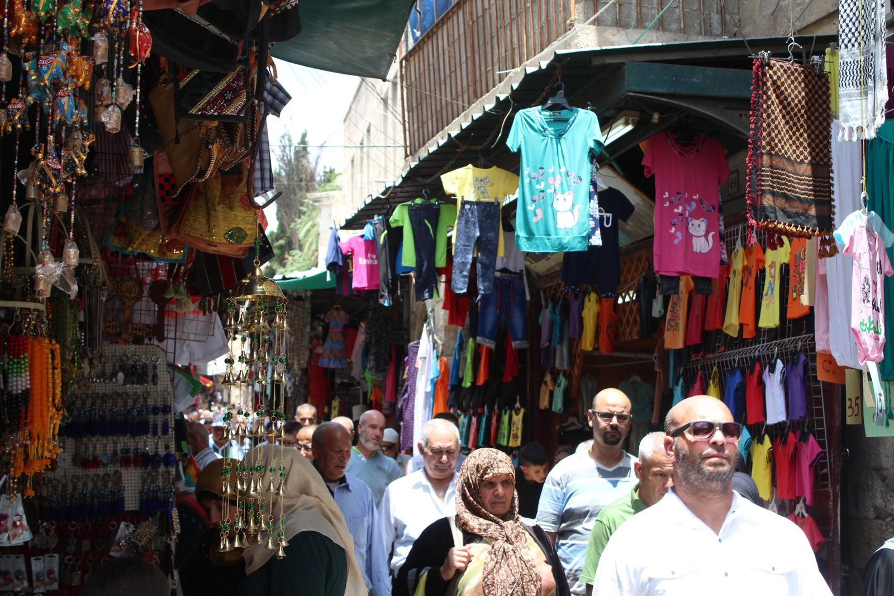
מתוך מצגת ירושלים של המגמהחבל ירושלים · נושא 3
קילומטר מרובע אחד, מוקף חומה, עם שמונה שערים וארבעה רבעים. בכל רובע קהילה אחרת, שפה אחרת ואתרים אחרים. בנושא הזה נלמד להתמצא בעיר העתיקה כמו מורה דרך: באיזה שער נכנסים, מה רואים בכל רובע, ולמה זה חשוב לתייר.
מפת העיר העתיקה
העיר העתיקה מוקפת בחומה שבנה הסולטן סולימאן לפני כ־500 שנה. בפינה הדרום־מזרחית שלה, מוגבה מעל העיר, נמצא הר הבית.
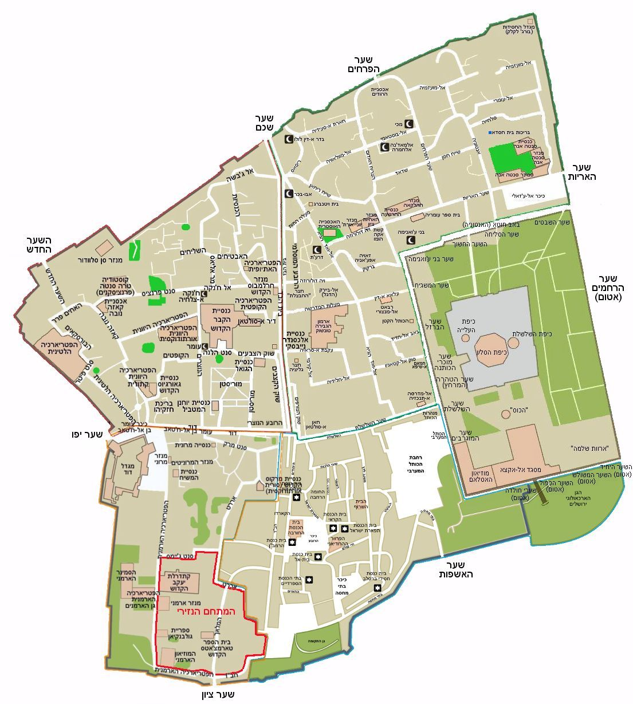
החומות
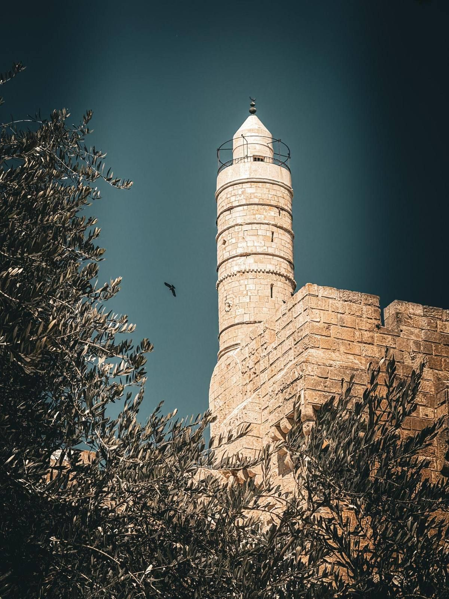
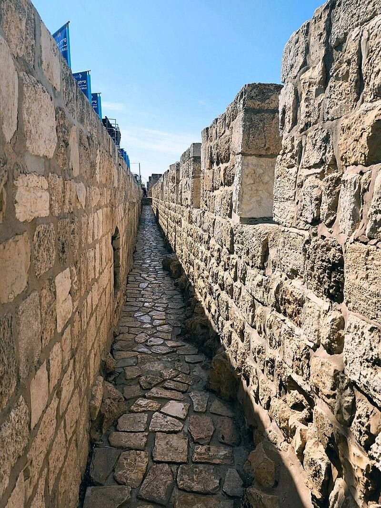
השערים · חלק א׳
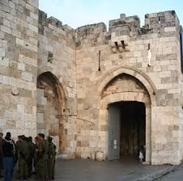
החשוב בשערים, יוצאת ממנו הדרך מערבה לכיוון יפו. נבנה ב־1538. ב־1917 נכנס דרכו הגנרל הבריטי אלנבי אחרי שכבש את העיר מהטורקים. לידו מגדל דוד.
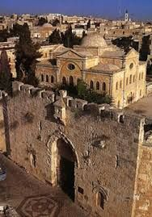
השער היחיד בחומה הדרומית. מחבר את הרובע הארמני להר ציון. במלחמת העצמאות פרצו דרכו לוחמים אל הרובע היהודי הנצור. סימני הקליעים נראים בו עד היום.
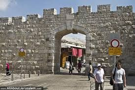
הגבוה בשערים. נפתח רק ב־1889, כדי להקל את הגישה לרובע הנוצרי.
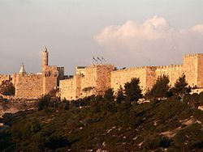
נקרא גם שער המוגרבים, על שם מוסלמים מצפון אפריקה שהתיישבו לידו. השער הקרוב ביותר לכותל המערבי ולהר הבית.
התמונות: מתוך השידור "ירושלים העיר העתיקה", מערכת השידורים הלאומית. בתמונה האחרונה: החומה הדרומית.
השערים · חלק ב׳
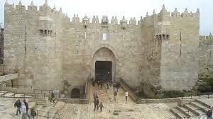
השער המפואר בחומה. יוצאת ממנו הדרך צפונה, לשכם ולדמשק. נקרא גם שער העמוד, על שם עמוד שעמד ברחבה שלפניו בימי הרומאים.
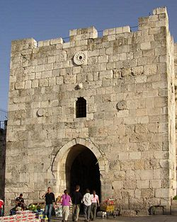
נקרא שער הפרחים בגלל עיטורי פרחים על אבני המגדל שבשער.
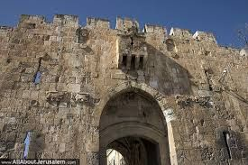
על שם האריות החקוקים משני צידי השער. במלחמת ששת הימים פרצו דרכו הצנחנים אל הר הבית. לידו כנסיית סנט אנה ותחילת הוויה דולורוזה.
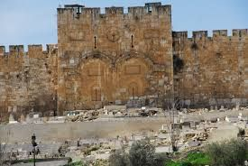
שער אטום בחומה המזרחית, מול הר הזיתים. לפי המסורת, ייפתח רק בבוא המשיח.
בבגרות שואלים: "ציין שני שערים ותאר אירוע היסטורי שהתרחש בכל אחד". האירועים החשובים: שער יפו, אלנבי 1917 · שער ציון, 1948 · שער האריות, 1967 · השער החדש, נפתח ב־1889.
עצירה לתרגול · עונים בסטודיו
הרובע היהודי
הרובע נמצא בדרום־מזרח העיר העתיקה: ממזרח הכותל, ממערב הרובע הארמני, מדרום החומה בין שער האשפות לשער ציון, ומצפון רחוב השלשלת.
לכן הרובע היהודי הוא גם שכונת מגורים חיה, גם מוקד של תיירות יהודית, וגם "מוזיאון פתוח" של ארכיאולוגיה.
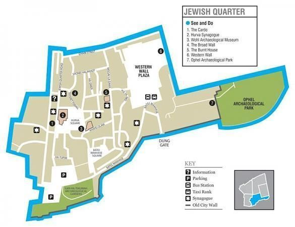
הרובע היהודי · מתחת לבתים
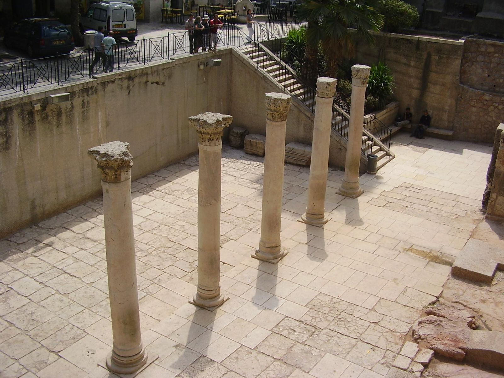
הרחוב הראשי של ירושלים הרומית־ביזנטית, עם עמודים משני צידיו. נחשף ב־1975, ומופיע במפת מידבא. חלקו משמש היום רחוב של חנויות. חשיבות לתייר: הולכים ברחוב שהלכו בו לפני 1,500 שנה.
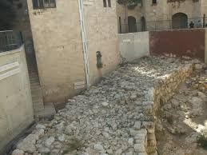
שרידי החומה שבנה המלך חזקיהו במאה ה־8 לפנה״ס, מפני סנחריב מלך אשור. מוזכרת בספר נחמיה. עדות לירושלים של ימי בית ראשון.
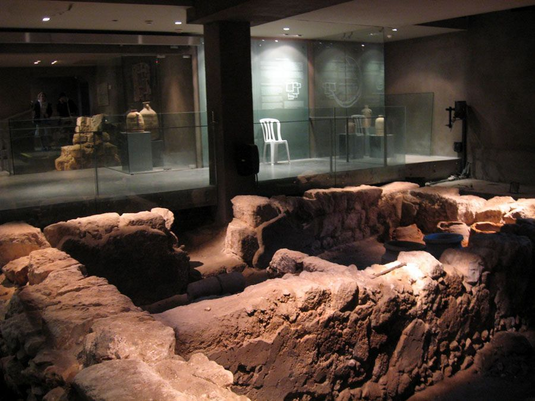
בית של משפחת כוהנים, ככל הנראה משפחת קתרוס, שנשרף בחורבן שנת 70. נמצאו בו שכבת אפר, כלים ומטבעות מימי המרד הגדול. היום יש בו מייצג אור־קולי. עדות מוחשית לחורבן בית שני.
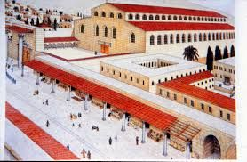
שרידי כנסייה ביזנטית ענקית מהמאה ה־6, שבנה הקיסר יוסטיניאנוס. בזמנה הייתה הכנסייה השנייה בגודלה בעיר, אחרי כנסיית הקבר.
הקרדו והבית השרוף: מתוך מצגת ירושלים של המגמה · החומה הרחבה והנאה (שחזור): מתוך השידור "ירושלים העיר העתיקה", מערכת השידורים הלאומית.
הרובע היהודי · בתי הכנסת
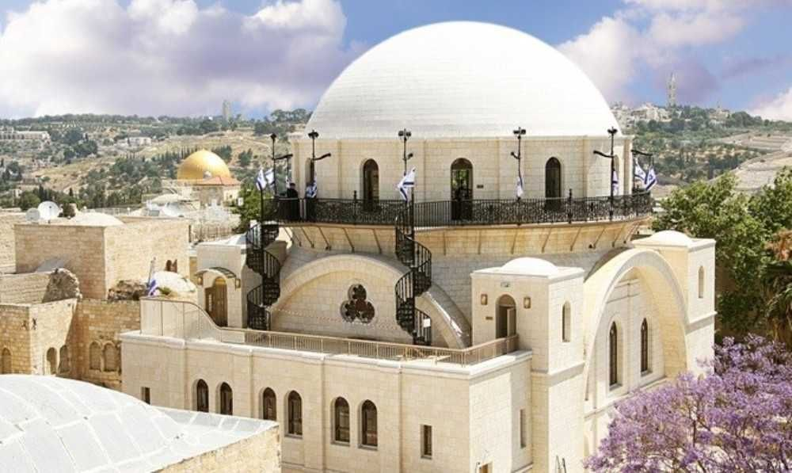
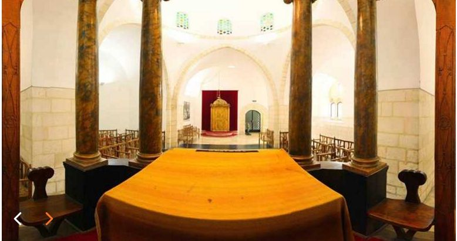
הרובע המוסלמי
הרובע המוסלמי שוכן בצפון־מזרח העיר העתיקה. הוא הגדול והמאוכלס ביותר מבין הרבעים, גובל בהר הבית, והוא מרכז המסחר של העיר העתיקה. יש בו גם כמה כנסיות, ולאורכו עובר חלק מהוויה דולורוזה.
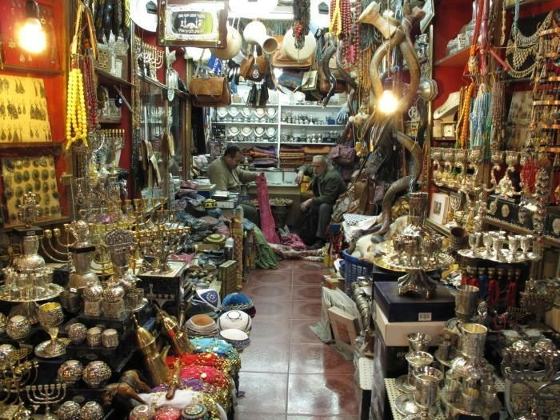
שוק הקצבים, שוק הבשמים ושוק הצורפים: שווקים מקורים לאורך הרחוב הראשי. שוק הכותנה נבנה ב־1336 בידי הממלוכים, ומוביל אל הר הבית.
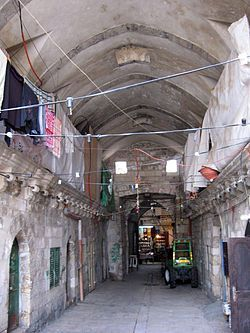
פונדק דרכים ממלוכי בן שתי קומות, מ־1386. בקומה התחתונה עמדו הגמלים, ובעליונה ישנו הסוחרים.
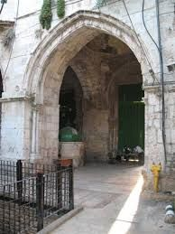
מבנים ממלוכיים ושער שנפתח אל הר הבית. לפי המסורת המוסלמית נתלתה בפתחו שלשלת שרק הצודק במשפט הצליח לאחוז בה. מולו שוקת שתייה מקושטת שבנה סולימאן.
את הר הבית, כיפת הסלע ואל־אקצא נלמד בנושא 4.
השווקים: מתוך מצגת ירושלים של המגמה · החאן ושער השלשלת: מתוך השידור "ירושלים העיר העתיקה", מערכת השידורים הלאומית.
הרובע הארמני
הרובע הארמני בדרום־מערב העיר העתיקה תופס כשישית משטחה. ייחודו: הוא מוקף חומות משלו, בתוך חומות העיר. גרים בו כמה אלפי ארמנים, נוצרים שמולדתם בהרי הקווקז, ששומרים על השפה, הזהות והמנהגים שלהם. הקהילה בארץ קיימת מהמאה ה־13.
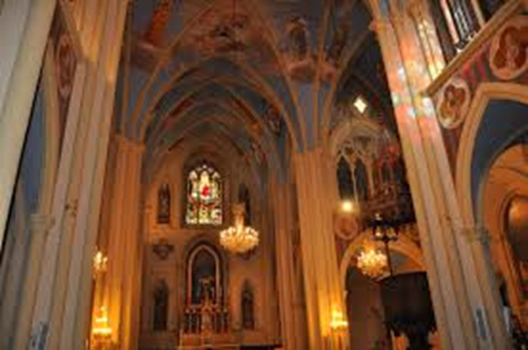
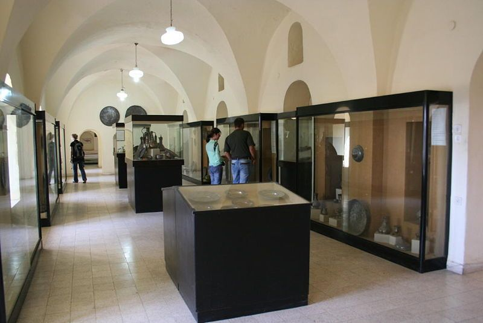
הרובע הנוצרי
הרובע הנוצרי בצפון־מערב העיר העתיקה. יש בו כנסיות, מנזרים ואכסניות לצליינים, והרבה חנויות לתיירים. לב הרובע הוא כנסיית הקבר, ובה מסתיימת הוויה דולורוזה.
את הנצרות בירושלים נלמד לעומק בנושא 5: הוויה דולורוזה, כנסיית הקבר, הר ציון והר הזיתים.
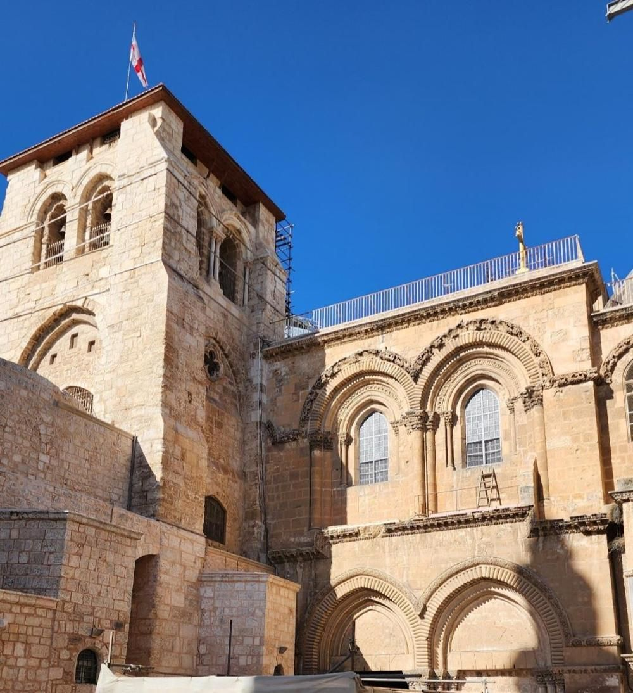
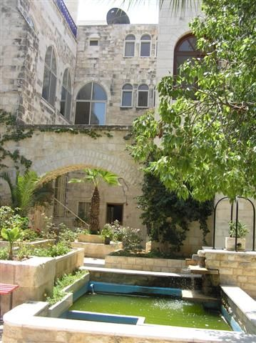
סיכום הרבעים
| רובע | מיקום | אתרים | מה מייחד אותו |
|---|---|---|---|
| היהודי | דרום־מזרח | הכותל, הקרדו, הבית השרוף, החומה הרחבה, החורבה, הרמב״ן, ארבעת בתי הכנסת הספרדיים | נבנה מחדש אחרי 1967, ארכיאולוגיה מתחת לבתים |
| המוסלמי | צפון־מזרח | הר הבית, השווקים, שוק הכותנה, חאן אל־סולטן, שער השלשלת | הגדול והמאוכלס ביותר, מרכז המסחר |
| הנוצרי | צפון־מערב | כנסיית הקבר, הכנסייה הלותרנית, המנזר האתיופי, סוף הוויה דולורוזה | כנסיות, מנזרים ואכסניות לצליינים |
| הארמני | דרום־מערב | קתדרלת סנט ג׳יימס, המוזיאון הארמני, כנסיית עץ הזית | מוקף חומות משלו, קהילה ששומרת על שפתה |
בבגרות 2024 התבקשו התלמידים לשייך לכל רובע תמונה: כנסיית הקבר, אל־אקצא, כיפת הסלע, הקרדו, ויה דולורוזה והחורבה.
עצירה לתרגול · עונים בסטודיו
שאלות סיכום · בסגנון בגרות
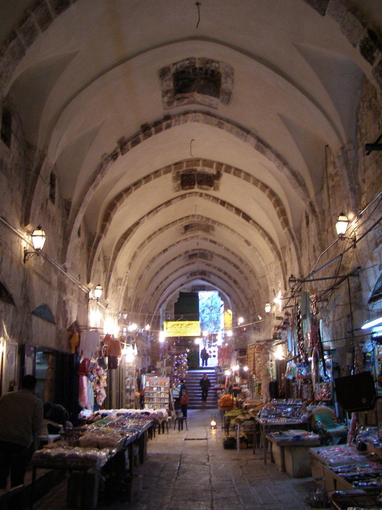
מתוך מצגת ירושלים של המגמהלסיום
בנושא הבא: הר הבית, הכותל המערבי ועיר דוד.